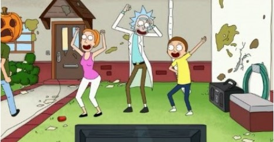
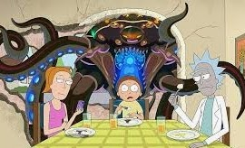
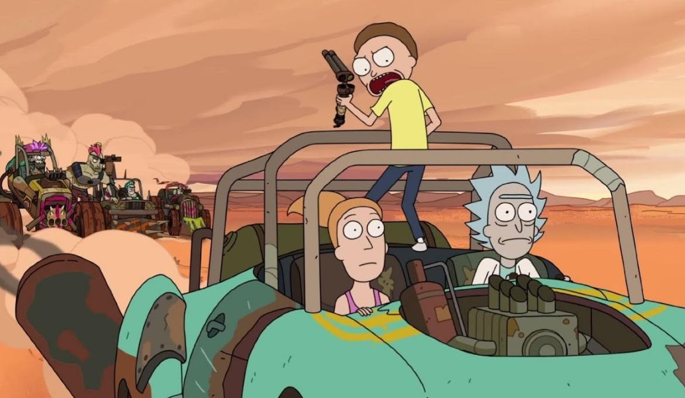
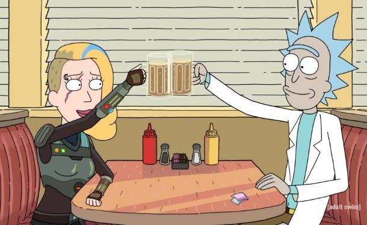
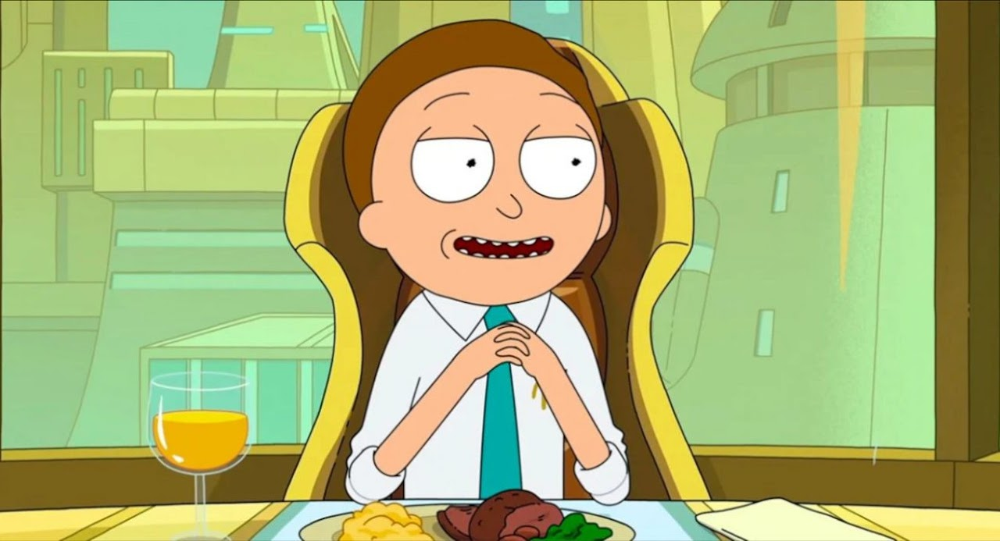
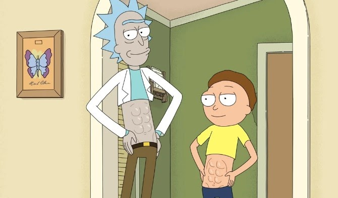
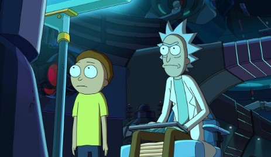

RESUMO DAS TEMPORADAS:

A 1ª temporada de Rick e Morty, que estreou em 2 de dezembro de 2013 e terminou em 14 de
abril de 2014, consiste em 11 episódios. A temporada apresenta a vida do excêntrico
cientista Rick Sanchez (voz de Justin Roiland), um homem de 70 anos que é um gênio em
ciência e tecnologia, mas também é alcoólatra e desrespeitoso com os outros.
Em resumo, a 1ª temporada de Rick e Morty é uma exploração surreal e humorística da vida de
um cientista louco e seu neto, que vivem aventuras interdimensionais e enfrentam desafios
morais e familiares.

A 2ª temporada de Rick e Morty aprofunda ainda mais o universo bizarro e repleto de
aventuras interdimensionais da dupla mais improvável da animação. Rick Sanchez, o gênio
cientista alcoólatra, e Morty Smith, seu neto inseguro e ansioso, continuam suas peripécias
por realidades alternativas, enfrentando perigos cósmicos e dilemas existenciais.

A 3ª temporada de Rick e Morty, que estreou em 1º de abril de 2017, consiste em 10 episódios
que apresentam as aventuras perigosas e humorísticas do cientista Rick Sanchez e seu neto
Morty Smith.
A temporada começa com o episódio “The Rickshank Rickdemption”, onde Rick é libertado da
prisão galáctica e se reencontra com sua família. Em seguida, os episódios “Rickmancing the
Stone” e “Pickle Rick” apresentam Rick e Morty em aventuras diferentes, incluindo uma viagem
à pré-história e uma transformação de Rick em um pepino para evitar a prisão. A temporada
também apresenta desenvolvimentos nos personagens, incluindo a crescente influência de Rick
sobre Morty e a insegurança de Jerry sobre sua família. Beth, a esposa de Jerry e mãe de
Summer e Morty, também é explorada mais profundamente, revelando sua própria personalidade e
problemas.

A 4ª temporada de Rick e Morty retorna com o mesmo estilo de humor negro e aventuras
interdimensionais que a fazem famosa. Após um hiato, a temporada começa com o episódio “Are
We Still Friends?”, que apresenta Morty obcecado por um cristal que lhe mostra sua eventual
morte, com cada ato mudando o futuro de forma quase aleatória.
Durante a temporada, Rick e Morty enfrentam novas aventuras, incluindo uma visita ao futuro,
onde encontram uma versão idosa de si mesmos, e uma viagem à uma dimensão onde os seres
humanos são substituídos por criaturas humanoides.

A 5ª temporada de Rick e Morty estreou em 2021 e apresenta novas aventuras e desafios para a
família Smith. Complicações no relacionamento de Morty e Jessica são um ponto central, pois
o encontro deles coincide com um jantar importante, tornando as coisas mais tensas entre os
dois.
A temporada também explora temas de segurança e perigo, como quando Morty pousa sua nave em
um oceano proibido, levando a família para um ambiente perigoso. Embora a temporada não
revele muito sobre o maior problema da série, ela apresenta novos desafios e situações
emocionantes para a família Smith.

A 6ª temporada de Rick and Morty, que estreou em 2022, apresenta 10 episódios novos da série
animada adulta. A temporada começa com Rick, o cientista louco, substituindo seu corpo
original por um robô, programado para ser 22% mais gentil com Morty e sua família. No
entanto, isso não impede Rick de continuar suas aventuras interdimensionais e Morty de
acompanhá-lo, enquanto descobre mais sobre o mundo real e reflete sobre a existência.
Durante a temporada, Rick e Morty enfrentam novos desafios e encontros com personagens
antigos e novos, incluindo Planetina, a ex-namorada de Morty, e o fuzileiro Coop, que foi
transformado em um peru. A temporada também explora temas como a natureza do tempo, a
realidade e a identidade, enquanto Rick e Morty continuam a viajar pelas dimensões e
enfrentam consequências de suas ações.

A 7ª temporada de Rick and Morty apresenta uma série de aventuras interdimensionais e
emocionantes para os personagens principais. Após o término da temporada anterior, Rick
Sanchez, o cientista excêntrico, move-se para a casa da filha, Beth, e estabelece um
laboratório no garagem. Isso permite que ele tenha mais liberdade para explorar o universo
com o neto, Morty.
O final da sétima temporada estabelece um futuro onde os personagens principais podem
embarcar em aventuras solo com mais frequência, explorando suas independências
recém-descobertas. Isso cria uma promessa de mais crescimento e exploração para a próxima
temporada, mantendo os fãs ansiosos pelo que virá a seguir.